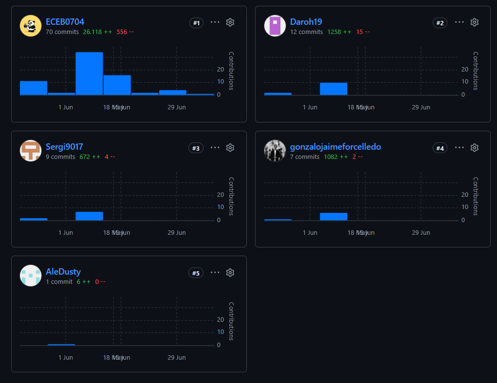
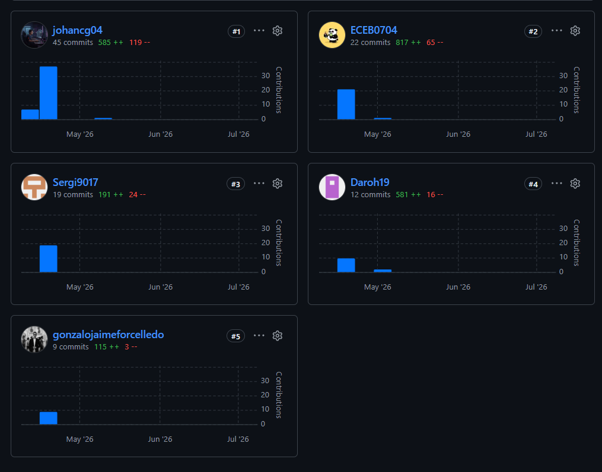
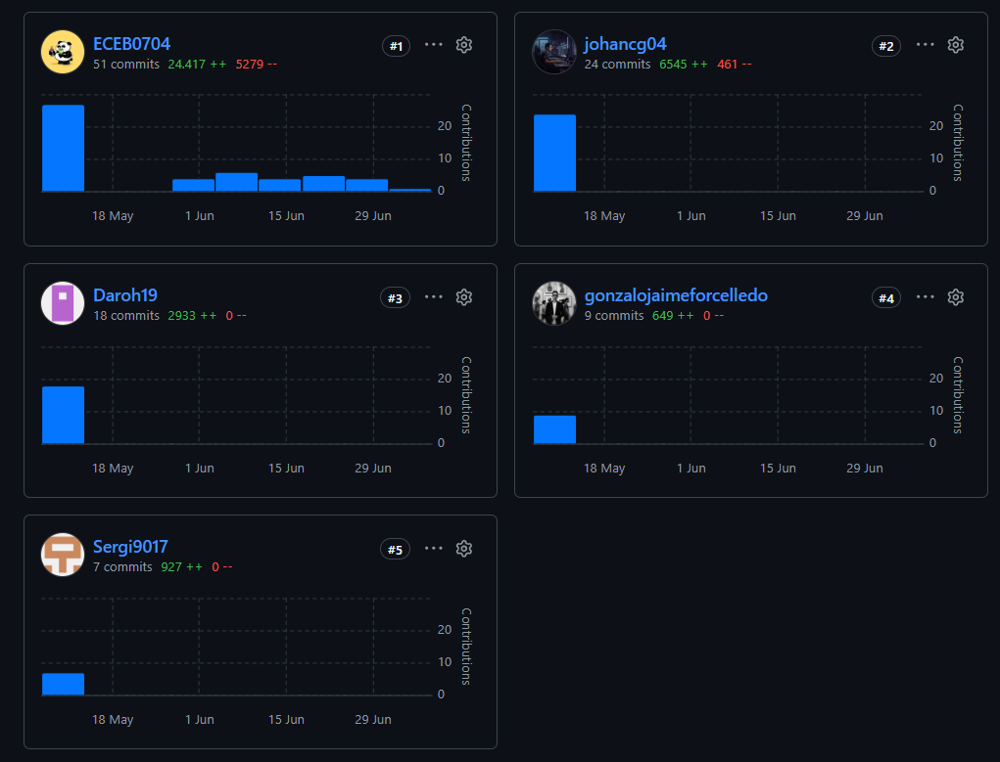
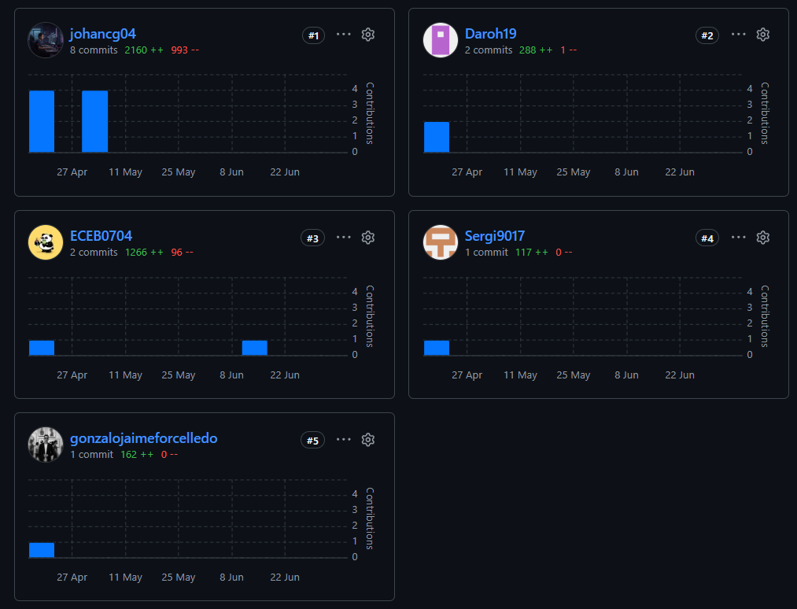

Términos y Condiciones de Servicio
Última actualización: Julio 2026
Estos Términos y Condiciones regulan el acceso y uso de la plataforma FruitLogix (sitio web, aplicaciones y servicios asociados). Al usar la plataforma, aceptas los términos descritos a continuación.
1. Aceptación de los Términos
Al acceder o utilizar FruitLogix, el usuario declara haber leído, entendido y aceptado estos Términos y Condiciones en su totalidad. Si no está de acuerdo con alguna disposición, debe abstenerse de usar la plataforma.
2. Descripción del Servicio
FruitLogix es una plataforma digital que conecta a productores agrícolas, distribuidores y clientes comerciales, ofreciendo monitoreo IoT en tiempo real, control de calidad y gestión logística a lo largo de la cadena de suministro de fruta fresca.
3. Cuentas de Usuario y Responsabilidades
El usuario es responsable de mantener la confidencialidad de sus credenciales de acceso y de toda actividad realizada bajo su cuenta. Debe proporcionar información veraz, completa y actualizada al momento de registrarse y utilizar el servicio.
4. Uso Aceptable de la Plataforma
Está prohibido utilizar FruitLogix para fines ilícitos, introducir código malicioso, vulnerar la seguridad del sistema, o suplantar la identidad de terceros. FruitLogix se reserva el derecho de suspender o cancelar cuentas que incumplan estas condiciones.
5. Propiedad Intelectual
El software, diseño, marca y contenidos de FruitLogix son propiedad de su equipo desarrollador y están protegidos por la legislación de propiedad intelectual vigente. Los datos que el usuario cargue a la plataforma (información de cosechas, pedidos, inventario, etc.) siguen siendo de su propiedad.
6. Privacidad y Protección de Datos
FruitLogix recopila y procesa datos personales y operativos únicamente para prestar el servicio: monitoreo, trazabilidad y comunicación con el usuario. No se comparten datos con terceros sin consentimiento, salvo obligación legal expresa.
7. Ética Profesional y Responsabilidad en la Ingeniería de Software
El equipo de desarrollo de FruitLogix se compromete a ejercer la ingeniería de software conforme a los principios del Código de Ética y Práctica Profesional de Ingeniería de Software de ACM/IEEE-CS, así como al Código de Ética del Colegio de Ingenieros del Perú (CIP). En particular, el equipo asume los siguientes compromisos:
- Interés público: priorizar el bienestar, la seguridad y los intereses de los usuarios y de la sociedad por encima de intereses particulares.
- Cliente y stakeholders: actuar con honestidad e integridad, cumpliendo lo acordado con los interesados del proyecto.
- Calidad del producto: procurar que el software cumpla los más altos estándares profesionales posibles, siendo transparentes sobre sus limitaciones.
- Juicio profesional independiente: mantener la integridad y la independencia del criterio técnico del equipo.
- Gestión responsable: promover un enfoque ético en la gestión del proyecto y fomentar la colaboración entre los miembros del equipo.
- Compromiso con la profesión: contribuir a la reputación y el avance de la ingeniería de software como disciplina.
- Trabajo en equipo justo y respetuoso: apoyar a los colegas, reconocer el aporte de cada integrante y fomentar un ambiente colaborativo.
- Aprendizaje continuo: participar en el aprendizaje permanente de la práctica profesional.
Estos principios guían tanto las decisiones técnicas como las de producto en FruitLogix, incluyendo el uso responsable de los datos, la seguridad de la información y la transparencia con los usuarios finales.
8. Transparencia del Proceso de Desarrollo
El equipo documenta su proceso de ingeniería de software mediante control de versiones en GitHub, con historial público de commits, ramas y revisiones de código, así como evidencia complementaria (capturas de pantalla y video) del ciclo de vida del producto: planificación, diseño, implementación, pruebas y despliegue. Esta documentación evidencia responsabilidad profesional y facilita la trazabilidad de las decisiones técnicas tomadas durante el desarrollo.
Repositorio del proyecto: github.com/upc-pre-202610-1asi0730-12242-DevsTeam




Capturas del historial de commits de los distintos módulos del proyecto: Plataforma, Reportes, Aplicación Web y Sitio Web.
Video que documenta el ciclo de vida del producto: planificación, diseño, implementación, pruebas y despliegue.
9. Limitación de Responsabilidad
FruitLogix se ofrece "tal cual" (as is). Si bien el equipo se esfuerza por garantizar la disponibilidad y precisión del servicio, no se garantiza la ausencia total de errores, interrupciones o pérdida de datos, y no se será responsable por daños indirectos derivados del uso de la plataforma.
10. Modificaciones a los Términos
Estos Términos pueden actualizarse periódicamente. Se notificará cualquier cambio relevante a través de la plataforma. El uso continuado del servicio después de una actualización implica la aceptación de los nuevos términos.
11. Ley Aplicable y Jurisdicción
Estos Términos se rigen por las leyes de la República del Perú. Cualquier controversia derivada de su interpretación o aplicación se someterá a los tribunales competentes de Lima, Perú.
12. Contacto
Para consultas sobre estos Términos y Condiciones, puedes escribirnos a través de los canales de contacto indicados en el sitio web de FruitLogix.